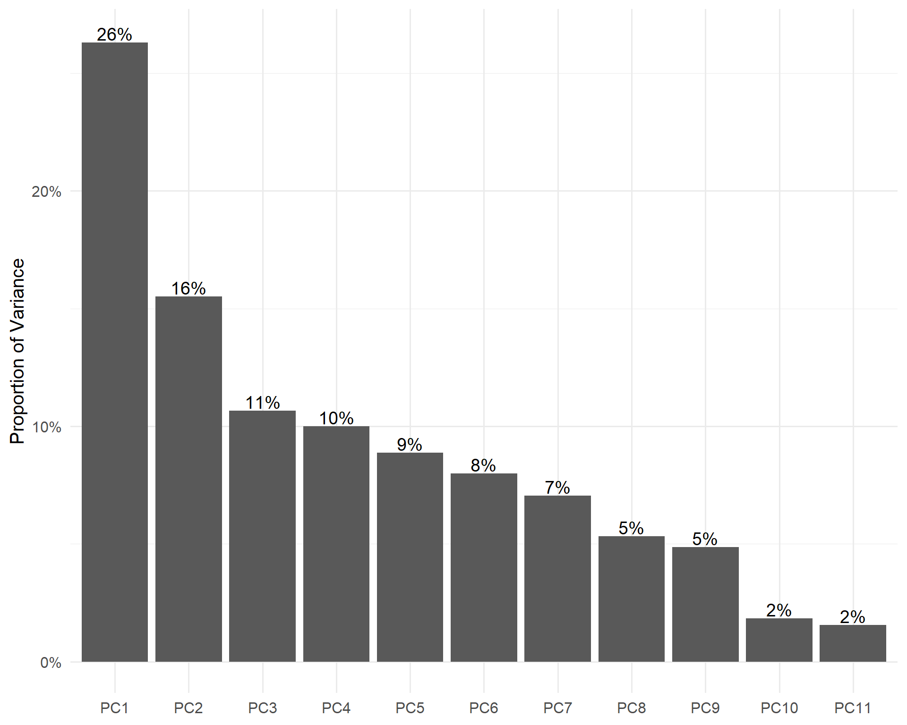
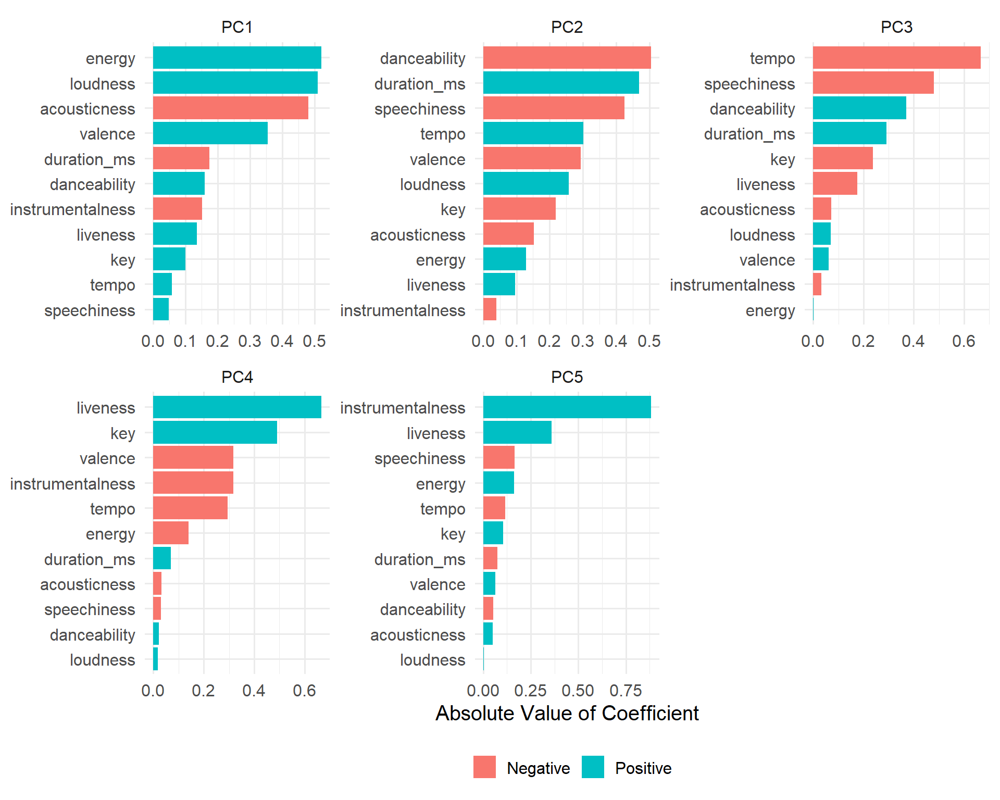

library(tidyverse)
library(tidytuesdayR)
library(tidymodels)
library(plotly)
library(rlang)
library(tidytext)
theme_set(
theme_minimal(
base_size = 15
)
)This is a quick PCA analysis of Taylor Swift’s discography using the dataset from the tidytuesday 2023, week 42.
We start off with loading the data using the tidytuesdayR package. We are aslo going to download the data using the tt_download function. The specific dataset we are using is the taylor_all_songs dataset.
datas <- tt_load_gh(2023, 42)
datas <- tt_download(datas)
Downloading file 1 of 3: `taylor_album_songs.csv`
Downloading file 2 of 3: `taylor_all_songs.csv`
Downloading file 3 of 3: `taylor_albums.csv`data <- datas$taylor_all_songsNext we are going to take a quick glimpse at the data to see what we are working with.
glimpse(data)Rows: 274
Columns: 29
$ album_name <chr> "Taylor Swift", "Taylor Swift", "Taylor Swift", "T…
$ ep <lgl> FALSE, FALSE, FALSE, FALSE, FALSE, FALSE, FALSE, F…
$ album_release <date> 2006-10-24, 2006-10-24, 2006-10-24, 2006-10-24, 2…
$ track_number <dbl> 1, 2, 3, 4, 5, 6, 7, 8, 9, 10, 11, 12, 13, 14, 15,…
$ track_name <chr> "Tim McGraw", "Picture To Burn", "Teardrops On My …
$ artist <chr> "Taylor Swift", "Taylor Swift", "Taylor Swift", "T…
$ featuring <chr> NA, NA, NA, NA, NA, NA, NA, NA, NA, NA, NA, NA, NA…
$ bonus_track <lgl> FALSE, FALSE, FALSE, FALSE, FALSE, FALSE, FALSE, F…
$ promotional_release <date> NA, NA, NA, NA, NA, NA, NA, NA, NA, NA, NA, NA, N…
$ single_release <date> 2006-06-19, 2008-02-03, 2007-02-19, NA, NA, NA, N…
$ track_release <date> 2006-06-19, 2006-10-24, 2006-10-24, 2006-10-24, 2…
$ danceability <dbl> 0.580, 0.658, 0.621, 0.576, 0.418, 0.589, 0.479, 0…
$ energy <dbl> 0.491, 0.877, 0.417, 0.777, 0.482, 0.805, 0.578, 0…
$ key <dbl> 0, 7, 10, 9, 5, 5, 2, 8, 4, 2, 2, 8, 7, 4, 10, 5, …
$ loudness <dbl> -6.462, -2.098, -6.941, -2.881, -5.769, -4.055, -4…
$ mode <dbl> 1, 1, 1, 1, 1, 1, 1, 1, 0, 1, 1, 1, 1, 1, 1, 1, 1,…
$ speechiness <dbl> 0.0251, 0.0323, 0.0231, 0.0324, 0.0266, 0.0293, 0.…
$ acousticness <dbl> 0.57500, 0.17300, 0.28800, 0.05100, 0.21700, 0.004…
$ instrumentalness <dbl> 0.00e+00, 0.00e+00, 0.00e+00, 0.00e+00, 0.00e+00, …
$ liveness <dbl> 0.1210, 0.0962, 0.1190, 0.3200, 0.1230, 0.2400, 0.…
$ valence <dbl> 0.425, 0.821, 0.289, 0.428, 0.261, 0.591, 0.192, 0…
$ tempo <dbl> 76.009, 105.586, 99.953, 115.028, 175.558, 112.982…
$ time_signature <dbl> 4, 4, 4, 4, 4, 4, 4, 4, 4, 4, 4, 4, 4, 4, 4, 4, 4,…
$ duration_ms <dbl> 232107, 173067, 203040, 199200, 239013, 207107, 24…
$ explicit <lgl> FALSE, FALSE, FALSE, FALSE, FALSE, FALSE, FALSE, F…
$ key_name <chr> "C", "G", "A#", "A", "F", "F", "D", "G#", "E", "D"…
$ mode_name <chr> "major", "major", "major", "major", "major", "majo…
$ key_mode <chr> "C major", "G major", "A# major", "A major", "F ma…
$ lyrics <lgl> NA, NA, NA, NA, NA, NA, NA, NA, NA, NA, NA, NA, NA…We are now going to select the columns to use for the PCA analysis. We are going to extract the columns containing various attributes of the songs. We are going to use the track_name column as the response variable and the rest of the columns as the predictors. Any rows with missing values are going to be dropped from the analysis.
The PCA analysis is done using the recipes package. The first step is to create a recipe using the recipe function. The recipe function takes in a formula and a dataset. The LHS is the response variable and the RHS is the predictors. The next step is to normalize the data using the step_normalize function. This function centers and scales the numeric predictors. The next step is to do the PCA analysis using the step_pca function. The step_pca function takes in the columns that we want to use for the PCA analysis, and we also defines the number of components that we want to extract. The last step is to prep the recipe using the prep function.
data <- data |>
select(
track_name,
danceability,
energy,
key,
loudness,
speechiness,
acousticness,
instrumentalness,
liveness,
valence,
tempo,
duration_ms
) |> drop_na()
rec <- recipe(track_name ~ ., data = data) |>
step_normalize(all_numeric_predictors()) |>
step_pca(all_numeric_predictors(), num_comp = 5) |>
prep()After conducting the PCA analysis, we are going to take a look at the proportino of variances that are explained by each component. We can see that the first component explains 26% of the variance, the second component explains 15% of the variance, the third component explains 11% of the variance. The first two component explains 42% of the cumulative variances.
local({
pca <- rec$steps[[2]]$res |> summary()
plot_data <- pca$importance |> as_tibble(rownames = 'type')
plot <- plot_data |>
pivot_longer(2:ncol(plot_data)) |>
filter(type == 'Proportion of Variance') |>
mutate(name = as_factor(name)) |>
ggplot(aes(x = name, y = value)) +
geom_col() +
labs(y = 'Proportion of Variance', x = NULL) +
scale_y_continuous(labels = scales::label_percent())
plot
})
We are now going to take a look at the various attributes of the songs that are associated with each component.
We can see that the first component is associated with the energy, loudness, acousticness of the songs. The second component is associated with the danceability, duration, and speechiness of the songs.
tidy(rec, 2) |>
filter(component %in% paste0('PC', 1:5)) |>
mutate(positive = ifelse(value > 0, 'Positive', 'Negative')) |>
mutate(value = abs(value)) |>
ggplot(aes(x = value, y = reorder_within(terms, value, component), fill = positive)) +
geom_col() +
scale_y_reordered() +
facet_wrap(~ component, scales = 'free') +
theme_minimal(base_size = 15) +
theme(legend.position = 'bottom') +
labs(x = 'Absolute Value of Coefficient', y = NULL, fill = NULL)
Finally, we are going to visualize the first two components using a scatter plot. Based on the attributes that we have seen in the previous plot, we can see that a higher PC1 is associated with higher energy, loudness, and positivity (valence). A more negative PC1 is associated with higher acousticness and duration, and instrumentalness. A higher PC2 is associated with lenghtier songs, higher temp, and loudness, while a more negative PC2 is associated with higher danceability, speechiness, and positivity (valence)
make_pc_plot <- \(data, pc_x, pc_y) {
pc_x <- parse_expr(pc_x)
pc_y <- parse_expr(pc_y)
p <- expr({
ggplot(pca_plot, aes(
x = !!pc_x,
y = !!pc_y,
color = track_name
)) +
geom_point() +
theme_minimal(base_size = 15) +
theme(legend.position = "none") +
coord_cartesian(xlim = c(-6, 6), ylim = c(-6, 6)) +
geom_hline(yintercept = 0,
linetype = 'dashed',
alpha = .25) +
geom_vline(xintercept = 0,
linetype = 'dashed',
alpha = .25)
}) |> eval()
ggplotly(p, tooltip = 'track_name')
}
pca_plot <- bake(rec, new_data = NULL)
make_pc_plot(pca_plot, 'PC2', 'PC1')